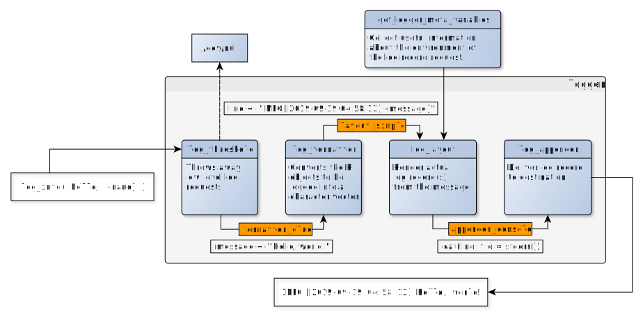

To make a successful log record, logger requires the
below components:
a log request, eg
log_error('Oops')ERROR in this caseformatter functionthe environment and meta-information of the log request, eg actual timestamp, hostname of the computer, the name of the user running the R script, the pid of the R process, calling function and the actual call etc.
f <- function() get_logger_meta_variables(log_level = INFO)
f()
#> $ns
#> [1] NA
#>
#> $ans
#> [1] "global"
#>
#> $topenv
#> [1] "R_GlobalEnv"
#>
#> $fn
#> [1] "f"
#>
#> $call
#> [1] "f()"
#>
#> $time
#> [1] "2024-06-17 19:43:10 UTC"
#>
#> $levelr
#> Log level: INFO
#>
#> $level
#> [1] "INFO"
#>
#> $pid
#> [1] 8414
#>
#> $r_version
#> [1] "4.4.1"
#>
#> $ns_pkg_version
#> [1] NA
#>
#> $node
#> [1] "fv-az2026-224"
#>
#> $arch
#> [1] "x86_64"
#>
#> $os_name
#> [1] "Linux"
#>
#> $os_release
#> [1] "6.5.0-1021-azure"
#>
#> $os_version
#> [1] "#22~22.04.1-Ubuntu SMP Tue Apr 30 16:08:18 UTC 2024"
#>
#> $user
#> [1] "runner"a logger definition to process the log request, including
log level threshold, eg INFO, which
defines the minimum log level required for actual logging – all log
requests with lower log level will be thrown away
log_threshold()
#> Log level: INFO
ERROR <= INFO
#> [1] TRUE
log_error('Oops')
#> ERROR [2024-06-17 19:43:10] Oopsformatter function, which takes R objects and
converts those into actual log message(s) to be then passed to the
layout function for the log record rendering – such as
paste, sprintf, glue or eg the
below custom example:
layout function, which takes log message(s) and
further information on the log request (such as timestamp, hostname,
username, calling function etc) to render the actual log records eg
human-readable text, JSON etc
appender function, which takes fully-rendered log
record(s) and delivers to somewhere, eg stdout, a file or a
streaming service, eg
appender <- function(line) cat(line, '\n')
appender('INFO [now] I am a log message')
#> INFO [now] I am a log messagePutting all these together (by explicitly setting the default config
in the global namespace):
log_threshold(INFO)
log_formatter(formatter_glue)
log_layout(layout_simple)
log_appender(appender_console)
log_debug('I am a low level log message that will not be printed with a high log level threshold')
log_warn('I am a higher level log message that is very likely to be printed')Note, that all logger definitions and requests are tied
to a logging namespace, and one log request might trigger multiple
logger definitions as well (stacking). Find more
information on these in the Customizing
the format and destination of log records vignette.